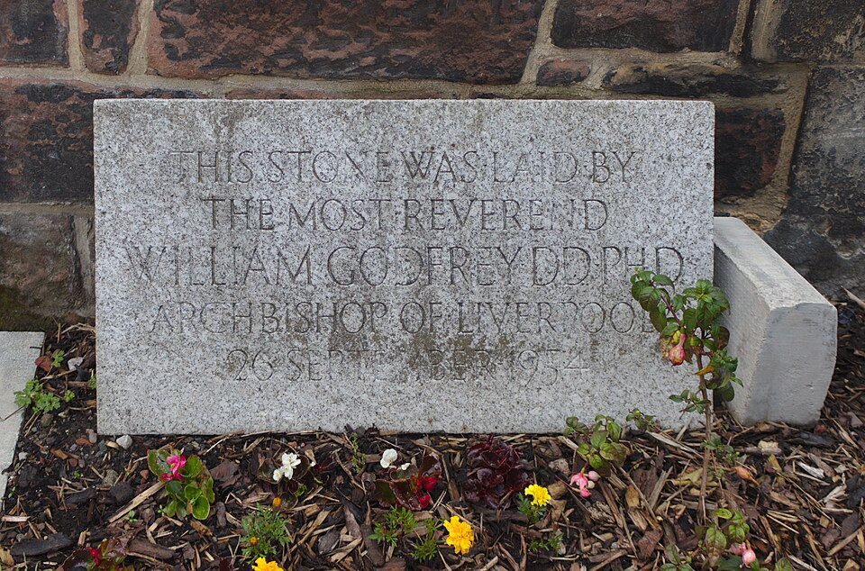

Direitos Fundamentais · DIRAN.03 · 2026.2 · II Unidade
Revisão para a prova da II Unidade
Os conceitos que a prova cobra, dos Módulos 1 a 6: o que cada um diz, como aparece num caso e como responder.
* Material elaborado com apoio de Inteligência Artificial Generativa — Claude (Anthropic) — para estruturação das lâminas e redação das questões simuladas. Conteúdo, fontes e responsabilidade: Prof. Mario Bastos (Portaria CNPq nº 2.664/2026).
FBBR — Direito — 3º semestre — Prof. Mario Bastos — aula de 30/11/2026.
Revisão · combinadosalvo 19:02
Antes de começar
Como é a prova
Segunda-feira, 07/12
No nosso horário. Individual, sem consulta, valendo 6,0.
Cai o semestre inteiro
Módulos 1 a 6, com peso maior para o Módulo 6, Direitos Civis e Políticos.
Doze questões
Dez objetivas, com cinco alternativas e uma só certa, de 0,4 cada. Duas discursivas, de 1,0 cada.
Regra de hoje: vocês respondem primeiro, discutimos depois, e só então aparece o gabarito. Errar aqui é de graça.
Revisão · esquemaalvo 19:05
Esquema
O caminho de hoje acompanha a prova
Bloco
O que se revisa
1 a 6 · Módulos 1 a 5
Eficácia e efetividade · cláusula pétrea · restringir e renunciar · proporcionalidade · direitos coletivos · habeas data
7 a 10 · Módulo 6
Censura e responsabilidade · liberdade de crença · inviolabilidade da casa · direitos políticos
Discursivas
Como escrever a resposta · características dos direitos · dever de proteção · expressão e privacidade · laicidade
Em cada bloco: o conceito, o desenvolvimento quando for preciso e uma questão simulada parecida com a da prova — sem ser igual.
Questão 1 · Eficácia e efetividadealvo 19:08
Schvaxet · CC BY-SA 4.0 · Wikimedia Commons
Questão 1 · Módulos 1 e 2
Eficácia jurídica e efetividade: dois planos
Eficácia jurídica: a aptidão da norma para produzir efeitos no sistema — invalidar atos incompatíveis, fundamentar pretensões, orientar a interpretação.
Efetividade: a realização desses efeitos no mundo dos fatos.
A distância entre os dois não apaga a norma: mostra o que falta para cumpri-la.
Aplicabilidade imediata (art. 5º, § 1º): os direitos se fundam na Constituição, e não na lei.
Questão 1 · Eficácia e efetividadealvo 19:11
Desenvolvimento
Eficácia e efetividade, lado a lado
Critério
Eficácia jurídica
Efetividade
Onde se mede
No sistema jurídico
Na realidade social
O que verifica
Se a norma pode produzir efeitos
Se os efeitos chegaram aos fatos
O que a atinge
Revogação, declaração de inconstitucionalidade
Orçamento, estrutura, desigualdade, omissão
Erro comum
"Não é cumprida, logo não vale"
"Está escrita, logo está resolvido"
Módulo 2, seção 3. Os princípios produzem efeitos diretos, interpretativos e negativos (Barroso, 2020).
Questão 1 · Eficácia e efetividadealvo 19:14
Questão simulada 1
A norma perdeu a validade na comarca?
A Constituição assegura que a lei não excluirá da apreciação do Judiciário lesão ou ameaça a direito (art. 5º, XXXV). Numa comarca do interior, não há defensor público há três anos, e quem não pode pagar advogado não consegue entrar com ação. Um estudante conclui que o inciso XXXV “perdeu a validade” naquela comarca.
A. Ele tem razão: a norma que não se realiza nos fatos deixa de valer naquele lugar.
B. A norma só valerá ali quando uma lei municipal regulamentar o acesso à Justiça.
C. Eficácia e efetividade são a mesma coisa; a norma passou a ser só programática.
D. A norma mantém eficácia jurídica; a falta de defensor é déficit de efetividade.
E. A norma tem efetividade plena por estar escrita; o problema é só administrativo.
Toque na questão para ver o gabarito.
Gabarito: D. A falta de defensor não retira da norma a aptidão para produzir efeitos: mostra a distância entre a norma e a realidade. Confundir os dois planos, exigir lei para um direito de aplicação imediata ou tratar o texto escrito como garantia de efetividade são os erros das demais.
Questão 2 · Cláusula pétreaalvo 19:19

Rodhullandemu · CC BY-SA 4.0 · Wikimedia Commons
Questão 2 · Módulos 1 e 2 e Aprofundamento 01
Cláusula pétrea: o que a emenda não pode abolir
O art. 60, § 4º, IV, veda a emenda “tendente a abolir” os direitos e garantias individuais.
Tendente a abolir é a emenda que esvazia o núcleo do direito, ainda que o nome continue no texto.
Não congela o texto: o direito pode ser regulamentado, reorganizado e até ampliado.
O quórum de três quintos é o rito de toda emenda: não supera a cláusula pétrea.
Questão 2 · Cláusula pétreaalvo 19:22
Desenvolvimento
Emenda possível e emenda vedada
Proposta
Pode ser deliberada
Por quê
Cria garantia nova ou amplia um direito
Sim
Não abole: amplia a proteção
Regulamenta o exercício sem tocar o núcleo
Sim
Conformar não é abolir
Mantém o inciso, mas exige licença prévia para exercê-lo
Uma proposta de emenda mantém o art. 5º, XI, que protege a casa, mas acrescenta que, em qualquer investigação, a polícia poderá entrar em qualquer casa, a qualquer hora, sem ordem judicial, bastando a suspeita do delegado.
A. Pode ser deliberada, porque o inciso XI continua escrito no texto da Constituição.
B. Pode ser deliberada se aprovada por três quintos, em dois turnos, nas duas Casas.
C. Não pode: a cláusula pétrea veda qualquer alteração no texto dos incisos do art. 5º.
D. Pode, porque a cláusula pétrea protege só o caput do art. 5º, e não os seus incisos.
E. Não pode: ao liberar a entrada por suspeita, a emenda tende a abolir a garantia.
Toque na questão para ver o gabarito.
Gabarito: E. A proposta mantém o nome do direito e esvazia o seu núcleo: é emenda tendente a abolir. A cláusula não exige supressão expressa, não proíbe toda alteração, não é superada pelo quórum e alcança os incisos.
Questão 3 · Restringir e renunciaralvo 19:30
Blogtrepreneur · CC BY 2.0 · Wikimedia Commons
Questão 3 · Módulo 2
Restringir o exercício não é renunciar ao direito
Inalienabilidade e irrenunciabilidade: ninguém abre mão, de forma definitiva, de um direito fundamental.
O exercício pode ser restringido de modo delimitado, no tempo e no objeto, com finalidade legítima.
Não exercer não é renunciar: deixar de usar hoje não autoriza ninguém a exigir o abandono para sempre.
Vale também entre particulares: os direitos fundamentais alcançam contratos e relações privadas.
Questão 3 · Restringir e renunciaralvo 19:33
Questão simulada 3
As duas cláusulas valem igualmente?
Na matrícula, uma academia exige que o aluno assine duas cláusulas: (I) autoriza câmeras de segurança nas áreas de treino durante o horário de funcionamento; (II) “renuncia em definitivo ao direito à própria imagem, que passa a pertencer à academia”.
A. As duas valem, porque o aluno assinou, e o consentimento do titular basta para tudo.
B. A I delimita o exercício com finalidade legítima; a II pretende abdicar do direito.
C. As duas são inválidas, porque a imagem é direito absoluto, que não admite restrição.
D. A II vale, porque os direitos fundamentais não se aplicam a contratos entre particulares.
E. A I é inválida, porque toda câmera em local privado equivale à censura prévia estatal.
Toque na questão para ver o gabarito.
Gabarito: B. A cláusula I restringe o exercício da imagem e da privacidade de modo delimitado e com fim legítimo (segurança). A II pretende a renúncia definitiva, que a irrenunciabilidade não admite. O consentimento não basta para tudo, o direito não é absoluto e vale entre particulares.
Questão 4 · Proporcionalidadealvo 19:38
Henry N. Hooper and Company (The Metropolitan Museum of Art) · CC0 · Wikimedia Commons
Questão 4 · Módulo 3
Proporcionalidade: adequação e necessidade
Adequação: o meio escolhido precisa ser capaz de alcançar o fim. Se não for, a restrição cai aí.
Necessidade: se existe outro meio igualmente eficaz e menos restritivo, a restrição não passa.
O meio alternativo se nomeia: dizer apenas que havia meio mais brando não basta.
Finalidade legítima é o começo, não o fim: sozinha, não justifica restrição nenhuma.
Questão 4 · Proporcionalidadealvo 19:41
Desenvolvimento
O roteiro de cinco passos
Passo
O que se verifica
1. Âmbito de proteção
Qual direito está em jogo e se a conduta está dentro dele
2. Conformação ou restrição
Se a norma dá forma ao exercício ou retira proteção
3. Fundamento e finalidade
Qual objetivo constitucional justifica a restrição
4. Adequação e necessidade
Se o meio alcança o fim e se havia meio menos restritivo, nomeado
5. Núcleo essencial
O que sobra do direito depois da restrição
Módulo 3, seções 5 a 7. A ação judicial não é um dos passos: ela leva o problema a juízo, não o resolve.
Questão 4 · Proporcionalidadealvo 19:44
Questão simulada 4
A proibição passa no teste?
Para combater a pichação, um município proíbe a venda de tinta spray a qualquer pessoa, em qualquer loja, por tempo indeterminado. Os dados mostram que a medida reduziu as pichações e que quase todas eram feitas por menores de 18 anos.
A. A medida é válida, porque combater a pichação é finalidade legítima, e isso basta.
B. A medida falha na adequação, porque proibir a venda nunca reduz a pichação.
C. Basta dizer que havia um meio mais brando, sem precisar indicar qual seria.
D. É adequada, mas falha na necessidade: bastava restringir a venda aos menores.
E. Antes de tudo, é preciso escolher a ação judicial para depois analisar a lei.
Toque na questão para ver o gabarito.
Gabarito: D. O enunciado diz que a medida funciona: é adequada. Mas havia meio igualmente eficaz e menos restritivo, e ele se nomeia — restringir a venda a menores. Finalidade legítima não basta, o meio alternativo deve ser indicado e a ação judicial não faz parte do roteiro.
Questão 5 · Direitos coletivosalvo 19:49
Malcolm Carruthers · CC BY-SA 2.0 · Wikimedia Commons
Questão 5 · Módulo 4
Difusos, coletivos e individuais homogêneos
Difusos: bem indivisível; titulares indeterminados, ligados por uma circunstância de fato.
Coletivos em sentido estrito: bem indivisível; grupo ligado por uma relação jurídica base.
Individuais homogêneos: direitos divisíveis, de cada um, que têm origem comum.
Não é o número de pessoas que define a categoria: é a estrutura do bem e do vínculo.
Questão 5 · Direitos coletivosalvo 19:52
Desenvolvimento
O teste de dois passos
Passo
Se a resposta for sim
Se a resposta for não
1. O bem se divide entre os titulares
Direito individual (homogêneo, se houver origem comum)
Direito transindividual: vá ao passo 2
2. Há relação jurídica base entre eles ou com a parte contrária
Coletivo em sentido estrito
Difuso
Módulo 4, seção 2. Código de Defesa do Consumidor, art. 81, parágrafo único. Um mesmo fato pode gerar pretensões de categorias diferentes.
Questão 5 · Direitos coletivosalvo 19:55
Questão simulada 5
Como se classificam os dois pedidos?
Uma fábrica despeja resíduos no rio que abastece três bairros. Os moradores querem (1) que a poluição pare e o rio seja recuperado e (2) que cada família seja reembolsada do que gastou com água mineral.
A. As duas pretensões são difusas, porque o número de moradores atingidos é grande.
B. A (1) é coletiva em sentido estrito, porque todos os moradores contrataram a fábrica.
C. A (1) é difusa: rio indivisível e vínculo de fato; a (2) é individual homogênea.
D. As duas são individuais homogêneas, porque cada morador sofreu prejuízo próprio.
E. A (1) é individual homogênea e a (2) é difusa, porque os gastos são incalculáveis.
Toque na questão para ver o gabarito.
Gabarito: C. O rio não se reparte e o que une os moradores é um fato (usar a mesma água): difuso. O reembolso é divisível e calculável, com origem comum na mesma poluição: individual homogêneo. Não há contrato com a fábrica, e o número de pessoas não define a categoria.
Questão 6 · Habeas dataalvo 20:00
Fuje23 · CC BY-SA 4.0 · Wikimedia Commons
Questão 6 · Módulo 5
Habeas data: o remédio do dado pessoal
Serve para conhecer e para retificar informações relativas à pessoa do próprio impetrante (art. 5º, LXXII).
Os registros são de entidades governamentais ou de caráter público.
Antes, o pedido administrativo: a recusa ou a demora é que abre a via judicial.
Locomoção → habeas corpus. Dado pessoal → habeas data. Falta de norma → mandado de injunção. Outro direito líquido e certo → mandado de segurança.
Questão 6 · Habeas dataalvo 20:03
Questão simulada 6
Qual é o remédio?
Júlio quer saber que informações a seu respeito constam de um cadastro mantido por um órgão federal, que o impediu de assinar um contrato. Ele pediu acesso ao órgão, que não respondeu no prazo legal.
A. Habeas corpus, porque o cadastro pode levar Júlio a ser preso no futuro.
B. Mandado de injunção, porque falta lei que obrigue o órgão a dar a resposta.
C. Ação popular, porque o cadastro lesa o patrimônio e a moralidade pública.
D. Mandado de segurança coletivo, porque outros podem estar no mesmo cadastro.
E. Habeas data, porque quer conhecer dados dele em registro de órgão público.
Toque na questão para ver o gabarito.
Gabarito: E. Conhecer informações relativas à própria pessoa, em registro de entidade governamental, depois do pedido não atendido: habeas data. Não há ameaça à locomoção, nem falta de norma, nem lesão ao patrimônio defendida em nome da coletividade, nem direito de grupo.
Questão 7 · Censura e responsabilidadealvo 20:08
AKS.9955 · CC BY-SA 4.0 · Wikimedia Commons
Questão 7 · Módulo 6
Censura antes, responsabilidade depois
Censura é o controle prévio do conteúdo pelo poder público. A Constituição a proíbe (art. 5º, IX; art. 220, § 2º).
Responsabilidade vem depois da divulgação: resposta proporcional e indenização (art. 5º, V e X).
O nome não muda a natureza: “conferência”, “parecer” ou “licença” prévia do Estado é censura.
A liberdade de expressão não é absoluta — por isso há responsabilização posterior. O que não existe é filtro estatal antes.
Questão 7 · Censura e responsabilidadealvo 20:11
Desenvolvimento
O que vem antes e o que vem depois
Momento
Quem age
O que pode fazer
Antes da divulgação
A Administração
Nada: controle de conteúdo é censura, vedada
Antes da divulgação
O juiz, a pedido de quem alega lesão
Só em caso excepcional, com lesão grave demonstrada
Depois da divulgação
O juiz
Resposta proporcional, indenização, retirada de trecho específico
Módulo 6, seções 2.2 a 2.4. Lei de Imprensa não recepcionada (ADPF 130); biografias sem autorização prévia (ADI 4.815).
Questão 7 · Censura e responsabilidadealvo 20:14
Questão simulada 7
O decreto se sustenta?
Um decreto estadual determina que peças de teatro com crítica ao governo só podem estrear depois de “parecer favorável” da Secretaria de Cultura.
A. É censura prévia, vedada; abusos se resolvem depois, com resposta ou indenização.
B. É válido, porque a liberdade artística não alcança a crítica feita a governantes.
C. É válido se a Secretaria fundamentar por escrito cada parecer contrário à estreia.
D. É inválido porque a expressão artística é absoluta e nunca gera dever de indenizar.
E. É válido, porque o parecer prévio avalia só a qualidade da peça, não o conteúdo.
Toque na questão para ver o gabarito.
Gabarito: A. Parecer prévio do Estado sobre o conteúdo é censura, qualquer que seja o nome. A crítica a governantes está no centro da proteção, a fundamentação não legitima o filtro, e a liberdade não é absoluta: há responsabilização posterior.
Questão 8 · Liberdade de crençaalvo 20:19
Vyacheslav Argenberg · CC BY 4.0 · Wikimedia Commons
Questão 8 · Módulo 6
Liberdade de crença: o foro íntimo e a conduta
O foro íntimo é intocável: ninguém é obrigado a crer ou a deixar de crer, nem privado de direitos pela fé (art. 5º, VI e VIII).
A conduta religiosa é protegida, mas pode ser limitada quando atinge direitos de terceiros.
Laicidade é neutralidade, não hostilidade: o Estado não adota religião, mas pode acomodar a fé.
Acomodação razoável: data ou horário alternativo, com igualdade e sem ônus desproporcional à Administração (STF, RE 611.874, tema 386).
Questão 8 · Liberdade de crençaalvo 20:22
Questão simulada 8
A chefia pode negar a troca?
Uma servidora, de religião que guarda a noite de sexta-feira, pede para trocar o plantão de sexta por outro dia, sem prejuízo do serviço. A chefia nega: “O Estado é laico e não pode levar religião em conta”.
A. A chefia está certa: a laicidade proíbe considerar motivo religioso em qualquer caso.
B. Cabe a acomodação se for razoável, mantiver a igualdade e não gerar ônus excessivo.
C. A servidora tem direito à troca sempre, porque a fé prevalece sobre o serviço público.
D. Ao recusar o plantão, a servidora perde os direitos políticos por descumprir dever.
E. A liberdade de crença protege só o pensamento, nunca conduta motivada pela fé.
Toque na questão para ver o gabarito.
Gabarito: B. Laicidade é neutralidade: o Estado pode acomodar a crença, desde que de modo razoável, com igualdade e sem ônus desproporcional (STF, tema 1.021, para servidores). A acomodação não é automática, a perda de direitos políticos exige recusa da obrigação e da prestação alternativa, e a conduta também é protegida.
Questão 9 · Inviolabilidade da casaalvo 20:27
Tomascastelazo · CC BY-SA 3.0 · Wikimedia Commons
Questão 9 · Módulo 6
A casa é asilo inviolável
“Casa” em sentido amplo: residência, quarto de hotel ocupado, escritório ou consultório não aberto ao público.
Sem consentimento do morador, só se entra em flagrante, desastre, socorro ou, durante o dia, por ordem judicial (art. 5º, XI).
A ordem judicial é individualizada: a cada casa, uma ordem.
No flagrante de crime permanente, a entrada sem mandado exige fundadas razões, justificadas depois (STF, RE 603.616).
Questão 9 · Inviolabilidade da casaalvo 20:30
Questão simulada 9
A entrada foi lícita?
Às 23h, sem mandado e sem flagrante, fiscais municipais entram no consultório de uma dentista, fechado ao público, para verificar denúncia de descarte irregular de lixo. A porta foi aberta pela faxineira.
A. Foi lícita, porque consultório é local de trabalho e não está protegido como casa.
B. Foi ilícita, porque fiscal nunca entra em consultório, nem com ordem judicial.
C. Foi ilícita: o consultório é casa, e nenhuma hipótese do inciso XI ocorreu.
D. Foi lícita, porque a faxineira, ao abrir a porta, consentiu em nome da dentista.
E. Seria lícita com ordem judicial, mesmo que cumprida às 23h, dentro do consultório.
Toque na questão para ver o gabarito.
Gabarito: C. O consultório fechado ao público é casa para fins constitucionais. Não havia consentimento da ocupante, flagrante, desastre ou socorro; e a ordem judicial, se houvesse, só valeria durante o dia.
Questão 10 · Direitos políticosalvo 20:35
Jebulon · CC0 · Wikimedia Commons
Questão 10 · Módulo 6
Direitos políticos: perda, suspensão — nunca cassação
Cassação — retirada por ato discricionário do poder — é vedada (art. 15).
Perda é definitiva; suspensão é temporária e cessa com o fim da causa.
Condenação criminal transitada em julgado suspende os direitos enquanto durarem os seus efeitos.
A suspensão é automática e vale mesmo com a prisão substituída por pena restritiva de direitos (STF, RE 601.182, tema 370).
Questão 10 · Direitos políticosalvo 20:38
Desenvolvimento
Perda e suspensão, lado a lado
Perda (definitiva)
Suspensão (temporária)
Cancelamento da naturalização por sentença transitada em julgado (I)
Incapacidade civil absoluta (II)
Perda da nacionalidade por outra causa
Condenação criminal transitada em julgado, enquanto durarem os efeitos (III)
Recusa da obrigação a todos imposta e da prestação alternativa (IV)
Improbidade administrativa (V)
Módulo 6, seção 7.4. A classificação em perda e suspensão é doutrinária; o art. 15 não a faz expressamente.
Questão 10 · Direitos políticosalvo 20:41
Questão simulada 10
Como estão os direitos políticos de Caio?
Caio foi condenado por crime, com trânsito em julgado, a dois anos de reclusão, e cumpriu a pena integralmente em 2025. Em 2026, quer votar e se filiar a um partido.
A. Ficaram suspensos enquanto durou a pena; cumprida a pena, voltaram a valer.
B. Foram cassados com a condenação e só voltam por anistia aprovada pelo Congresso.
C. Foram perdidos para sempre, porque a condenação criminal é hipótese de perda.
D. Nunca foram atingidos, porque a suspensão depende de declaração na sentença.
E. Continuam suspensos para sempre, porque a condenação fica na vida pregressa.
Toque na questão para ver o gabarito.
Gabarito: A. Condenação criminal transitada em julgado é causa de suspensão, que dura enquanto durarem os efeitos da condenação e cessa com o cumprimento da pena. Não existe cassação, não é hipótese de perda e a suspensão é automática.
Discursivas · métodoalvo 20:46
Discursivas
Como escrever a resposta
1. Nomeie o conceito
Diga qual característica, direito ou princípio está em jogo e onde está na Constituição.
2. Aplique ao caso
Mostre, com os fatos do enunciado, por que o conceito resolve aquela situação.
3. Decida e diga a consequência
Conclua: o ato se sustenta ou não, e o que deve acontecer.
Nas colisões, use o roteiro de cinco passos do Módulo 3 e enfrente o argumento do outro lado. Texto corrido, sem tópicos.
Discursivas · Característicasalvo 20:49
State Government Photographer (South Australia) · CC0 · Wikimedia Commons
Discursivas · Módulo 2
Características que derrubam a resposta do poder público
Concorrência: o mesmo fato mobiliza vários direitos — uns pedem abstenção, outros, prestação.
Vinculação dos Poderes e aplicabilidade imediata: o Executivo deve obediência direta aos direitos; a falta de lei não apaga o dever.
Relatividade: restringir exige fundamento constitucional e finalidade legítima; conveniência administrativa não basta.
Na discursiva, cada característica entra ligada a um fato do caso — não como lista decorada.
Discursivas · Característicasalvo 20:52
Questão simulada 11
A recusa da secretaria se sustenta?
Uma secretaria de saúde recusa a um paciente a cópia do laudo do exame que ele fez num hospital público. Alega que não há regulamento interno sobre a entrega de laudos e que, como o paciente não foi buscá-lo em 30 dias, “renunciou” ao documento.
A. Sim: sem regulamento interno, o direito do paciente ainda não pode ser exercido.
B. Sim: ao deixar de buscar o laudo no prazo, o paciente renunciou ao seu direito.
C. Não: o direito vale sem regulamento, e deixar de exercê-lo não é renunciar a ele.
D. Não, porque o prazo de 30 dias só valeria se estivesse fixado em lei federal.
E. Sim, porque os direitos fundamentais obrigam o Legislativo, e não a saúde pública.
Toque na questão para ver o gabarito.
Gabarito: C. A falta de regulamento não impede o exercício do direito (aplicabilidade imediata e vinculação do Executivo), e não exercer no prazo não equivale a renunciar (irrenunciabilidade). Os direitos vinculam todos os Poderes.
Discursivas · Dever de proteçãoalvo 20:57
Spritegrape · CC BY 4.0 · Wikimedia Commons
Discursivas · Módulos 2 e 3
Dever de proteção: o Estado viola também por omissão
Os direitos exigem abstenção — não agredir — e também proteção contra agressões de terceiros.
A proporcionalidade tem duas faces: proíbe o excesso e proíbe a proteção insuficiente.
Omissão diante de risco conhecido é violação, e o dever cresce quando a vítima é vulnerável.
O Estado que tortura viola por excesso; o que não protege ninguém da tortura de particulares viola por insuficiência.
Discursivas · Dever de proteçãoalvo 21:00
Questão simulada 12
A direção da escola violou algum direito?
Uma escola municipal recebe, há meses, denúncias de que um aluno é agredido por colegas no recreio. A direção nada faz e responde: “Briga entre alunos é assunto das famílias, não do poder público”.
A. Não: os direitos fundamentais protegem as pessoas só contra o próprio Estado.
B. Sim: há proteção insuficiente, porque a escola sabia do risco e nada fez.
C. Sim, mas só se a família do aluno tiver registrado ocorrência na polícia.
D. Não: a direção só violaria direito se ela mesma tivesse agredido o aluno.
E. Não: o dever de proteção depende de uma lei municipal específica sobre o tema.
Toque na questão para ver o gabarito.
Gabarito: B. O direito à integridade impõe ao poder público, além de abstenção, o dever de proteger contra agressões de terceiros. Diante de risco conhecido e reiterado, a omissão viola o direito por proteção insuficiente.
Discursivas · Expressão e privacidadealvo 21:05
The Metropolitan Museum of Art · CC0 · Wikimedia Commons
Discursivas · Módulo 6
Expressão e privacidade: separar o que cada parte do conteúdo faz
Crítica a agente público, sobre a função, é assunto de interesse público e fica protegida, mesmo dura.
Dado pessoal sem relação com a função — saúde, família, endereço — é interesse do público, não interesse público.
A solução menos restritiva costuma ser parcial: retirar o trecho lesivo e responsabilizar, sem calar a crítica.
Aplique o roteiro do Módulo 3: a retirada de todo o conteúdo é o meio mais restritivo e precisa de justificativa forte.
Discursivas · Expressão e privacidadealvo 21:08
Questão simulada 13
O que fazer com o vídeo?
Um influenciador publica vídeo em que critica a gestão do secretário municipal de transportes e, no fim, mostra o endereço da casa da mãe dele. O secretário pede à Justiça a retirada do vídeo inteiro.
A. Retira-se só o trecho com o endereço, e a crítica à gestão continua publicada.
B. Retira-se o vídeo inteiro, porque a honra do secretário prevalece sobre a crítica.
C. Mantém-se o vídeo inteiro, porque a liberdade de expressão é absoluta e sem limite.
D. O vídeo só pode ser retirado por decisão da própria Secretaria de Transportes.
E. Nada pode ser feito, porque o vídeo já saiu e qualquer retirada seria censura.
Toque na questão para ver o gabarito.
Gabarito: A. A crítica à gestão é de interesse público e está protegida; o endereço da mãe não tem relação com a função e expõe a intimidade. O meio menos restritivo é retirar só esse trecho, sem prejuízo de indenização. Decisão judicial posterior não é censura; a Administração não pode retirar conteúdo.
Discursivas · Laicidadealvo 21:13
Abaddon1337 · CC BY-SA 4.0 · Wikimedia Commons
Discursivas · Módulo 6
Laicidade: neutralidade do Estado diante da fé
A liberdade de consciência e de crença protege também quem não crê (art. 5º, VI).
O Estado não adota, não favorece e não impõe religião (art. 19, I) — e não é hostil a ela.
Na escola pública, a religião entra pela facultatividade: o ensino religioso é de matrícula facultativa (art. 210, § 1º).
A maioria não autoriza impor fé: os direitos fundamentais protegem a minoria contra a vontade da maioria.
Discursivas · Laicidadealvo 21:16
Questão simulada 14
A determinação é compatível com a Constituição?
O prefeito determina que todas as reuniões do conselho municipal de saúde comecem com uma leitura bíblica, da qual todos os conselheiros devem participar.
A. Sim, porque a maioria dos conselheiros é cristã e o Estado brasileiro não é ateu.
B. Sim, porque a laicidade proíbe o Estado apenas de fundar igrejas e de pagá-las.
C. Não, porque a laicidade obriga o Estado a combater as manifestações de fé.
D. Sim, desde que quem discordar possa ficar em silêncio durante a leitura.
E. Não: o Estado não pode impor prática religiosa, nem mesmo a quem não crê nela.
Toque na questão para ver o gabarito.
Gabarito: E. Laicidade é neutralidade: o Estado não impõe prática religiosa, e a liberdade de crença inclui a de não crer. A maioria não legitima a imposição, ficar em silêncio não afasta a participação obrigatória e a laicidade não é hostilidade à fé.
Revisão · fechoalvo 21:21
Para 07/12
O que levar daqui
Uma ideia por questão
Cada objetiva cobra um conceito. Leia o caso, ache o conceito e descarte as alternativas que trocam a regra.
Discursiva: conceito, caso, decisão
Nomeie o conceito, aplique aos fatos, decida e diga a consequência. Enfrente o argumento contrário.
Estude pelos módulos
Leitura integral dos Módulos 1 a 6. No Módulo 6, os quadros de núcleo e jurisprudência; no Módulo 3, o roteiro de cinco passos.
Prova: segunda-feira, 07/12/2026, no nosso horário. Individual, sem consulta, valendo 6,0.
Revisão · referênciasalvo 21:24
Referências e créditos
De onde vieram o conteúdo e as imagens
Conteúdo: Módulos 1 a 6 e Aprofundamento 01 da disciplina, com as decisões do STF como relatadas nos módulos. Imagens: Wikimedia Commons, nas licenças indicadas; registro em imagens-revisao-ii/creditos.json.
d1 · Flooded street in suburban Adelaide, 1917(GN01966).jpg — State Government Photographer (South Australia) · CC0
d2 · Streetlights illuminating fog on a residential lawn at night.jpg — Spritegrape · CC BY 4.0
d3 · Megaphone MET C4491 89.4.3323.jpg — The Metropolitan Museum of Art · CC0
d4 · Orbe - Chantemerle - salle de classe 2.jpg — Abaddon1337 · CC BY-SA 4.0
q1 · Dunn Memorial Bridge Unfinished Section.jpg — Schvaxet · CC BY-SA 4.0
q2 · Foundation stone of St Vincent de Paul, Liverpool.jpg — Rodhullandemu · CC BY-SA 4.0
q3 · Legal Contract & Signature - Warm Tones.jpg — Blogtrepreneur · CC BY 2.0
q4 · Balance scale MET DP318014.jpg — Henry N. Hooper and Company (The Metropolitan Museum of Art) · CC0
q5 · Telephone Main Switchboard - geograph.org.uk - 952173.jpg — Malcolm Carruthers · CC BY-SA 2.0
q6 · Kansallisarkisto Helsinki Rauhankatu 17 luettelohuone kortistokaappi 2026 02 23.jpg — Fuje23 · CC BY-SA 4.0
Declaração de uso de Inteligência Artificial Generativa
As lâminas e as questões simuladas foram estruturadas e redigidas com apoio de Inteligência Artificial Generativa — Claude (Anthropic) —, a partir dos módulos da disciplina e da prova da II Unidade, sob direção, revisão e responsabilidade integral do professor.
Portaria CNPq nº 2.664/2026. Decisões do STF como relatadas nos módulos; imagens de licença livre, com crédito nas lâminas e na lâmina de créditos.
Lâmina1/1
Alvo--:--
Agora--:--
Ritmo-
setas navegam · F tela cheia · G gabarito · N notas · O oculta opcionais · M limpa tudo · H oculta este painel